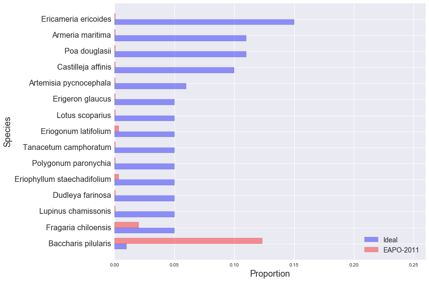

golden gate national parks conservancy: scrub mix
EAPO-2011
EAPO-2011
NMS-2010
NMS-2011
NMS-2012
NUWO-2010
NUWO-2011
NUWO-2012
SUDU-2008
SUDU-2009
SUDU-2010
SUDU-2011
SUDU-2012
Ideal and Observed Scrub Mix, EAPO-2011:
Other Species in EAPO-2011 Sample:
| Species | Observed % |
|---|---|
| Rubus ursinus | 17.00% |
| Bromus diandrus | 14.67% |
| Briza maxima | 12.33% |
| Ceanothus thyrsiflorus | 5.33% |
| Vulpia sp. | 4.00% |
| Scrophularia californica | 3.67% |
| Bromus hordeaceus | 3.67% |
| Raphanus sativus | 3.33% |
| Toxicodendron diversilobum | 3.00% |
| Lolium sp. | 2.33% |
| Hedera helix ssp. canariensis | 2.00% |
| Rumex acetosella | 1.67% |
| Bare ground | 1.67% |
| Lupinus arboreus | 1.33% |
| Rhamnus californica | 1.33% |
| Avena sp. | 1.33% |
| Pinus radiata | 1.00% |
| Carduus pycnocephalus | 0.67% |
| Heteromeles arbutifolia | 0.67% |
| Pteridium aquilinum | 0.67% |
| Carpobrotus edulis | 0.67% |
| Cynosurus echinatus | 0.67% |
| Geranium dissectum | 0.67% |
| Ehrharta erecta | 0.33% |
| Holcus lanatus | 0.33% |
| Eschscholzia californica | 0.33% |
| Iris douglasiana | 0.33% |